КазнаБот — бот-казначей для СНТ и коттеджных посёлков. Узнайте, куда ушёл каждый рубль вашего посёлка: собирает взносы, ведёт учёт по улицам и участкам и отдаёт прозрачный отчёт в общий чат. Без таблиц, тетрадок и «спросите у председателя».
Открыть демо-бота Написать нам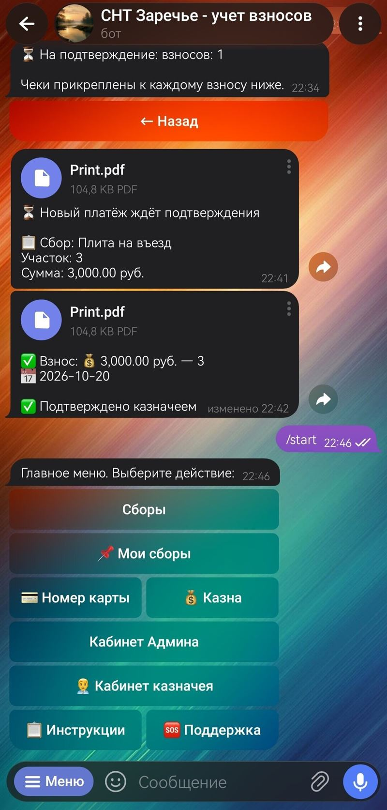
Карточка сбора — живая: цель, прогресс, остаток. Как собрать видно соседу, так и казначею.
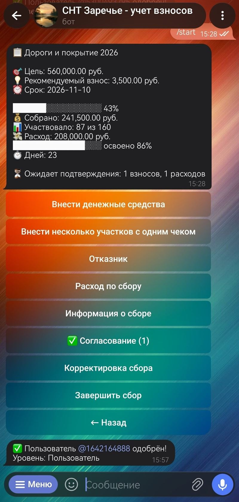
Каждый посёлок проходит через одно и то же. Мы просто убрали из этого пути ручной труд и недоверие.
«Кто заплатил, кто нет» — в тетради у казначея. Сгорела на даче или ушла на больничный — и вся история сбора в никуда.
Таблица есть, но она у одного человека. Сосед её не видит, значит, не верит. Долги копятся молча.
Главный вопрос любого сбора. Возникает всегда, когда отчёта нет на виду. Отвечать на него руками — значит ссориться.
Обычные программы для СНТ ставят на один компьютер — обычно тот, где сидит бухгалтер или председатель. КазнаБот живёт в Telegram: он есть у каждого соседа в кармане, настраивается за 10 минут и не требует осваивать бухгалтерию.
Взносы и платежи учитывает те же, но отчёт не надо никому приносить — он сам приходит в общий чат.
Соседу — три касания. Казначею — одна кнопка подтверждения. Остальное бот делает сам. Вот путь взноса от чека до казны — восемь настоящих экранов демо-бота.
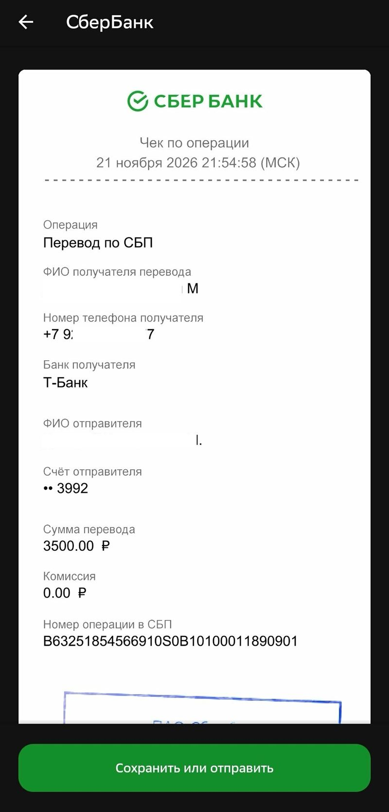
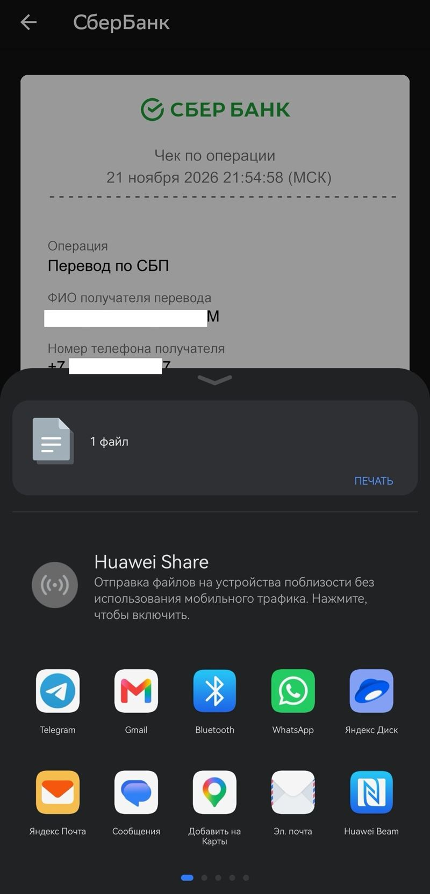
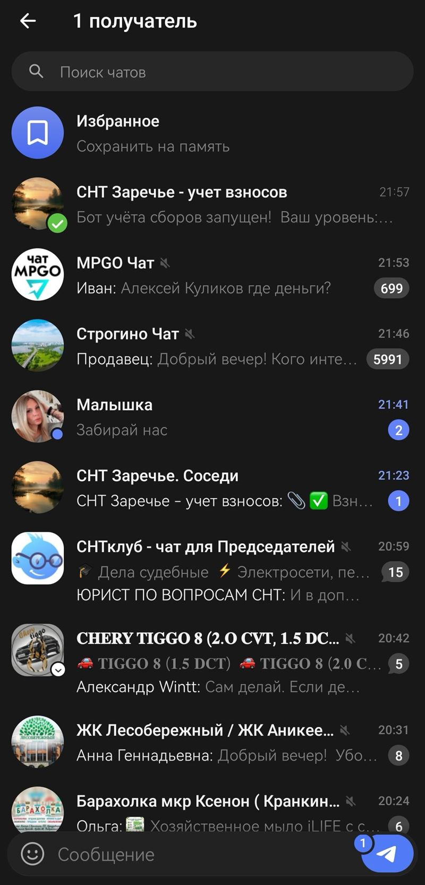
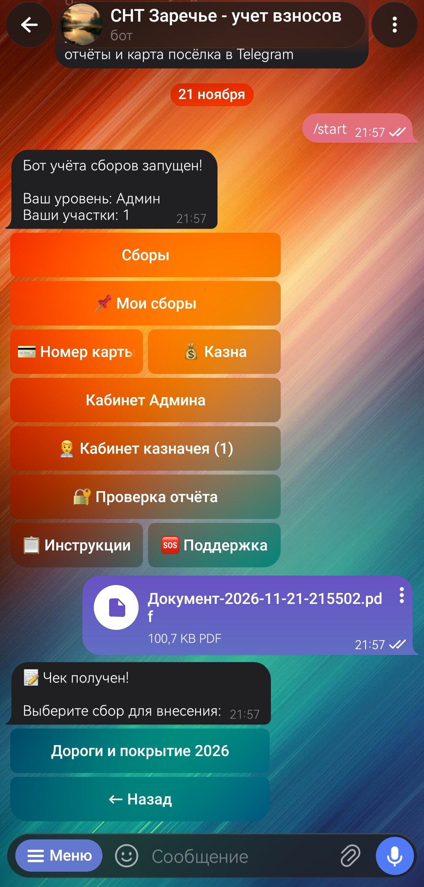
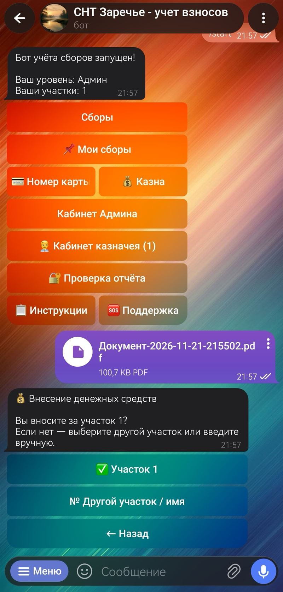
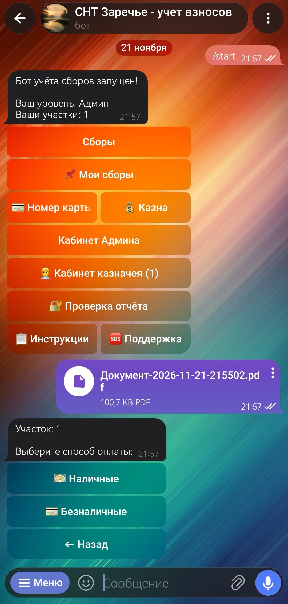
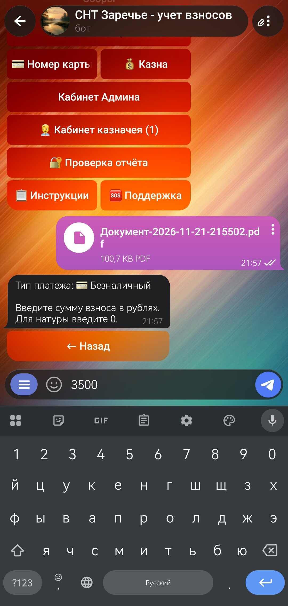
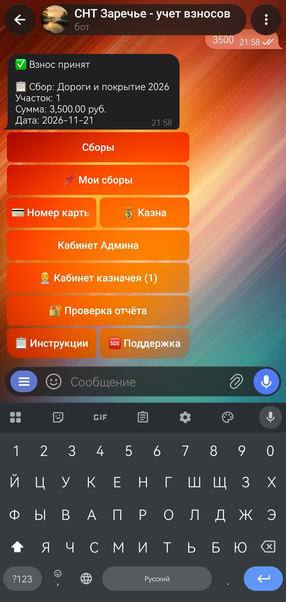
Никаких «универсальных кабинетов», в которых никто не может ничего найти. У каждой роли — свой сценарий.
Создаёт улицы и участки, назначает казначеев, заводит сборы. Всё управление в одном меню — как программа для председателя СНТ, только не надо ничего устанавливать.
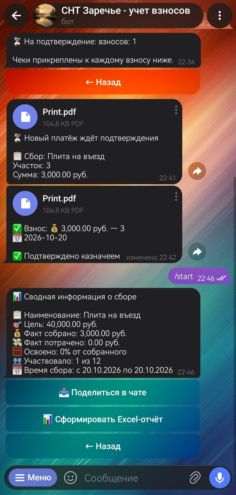
Подтверждает взносы одним нажатием, вносит расходы с чеком, выгружает отчёты. Бот берёт на себя обязанности казначея СНТ — без тетради, таблиц и «спросите у меня».
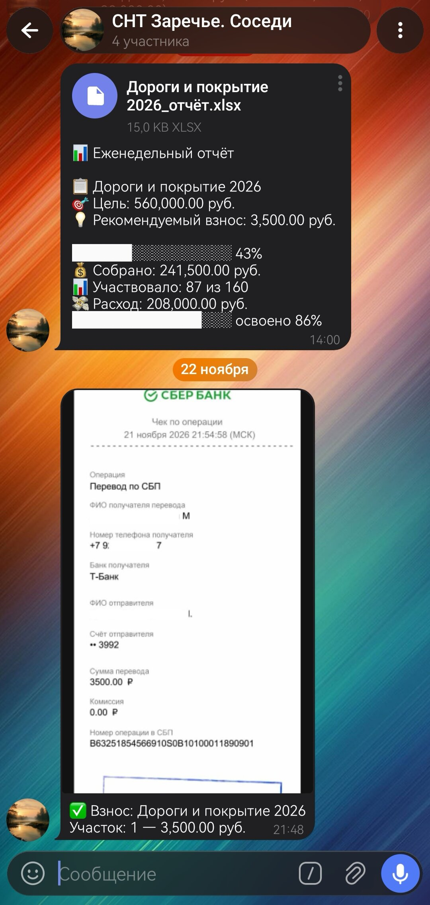
Пересылает чек и называет участок — взнос учтён. Сводки и отчёты приходят в общий чат: всё видно, ничего не скрывается.
Не «доверьтесь казначею», а «откройте и посчитайте сами».
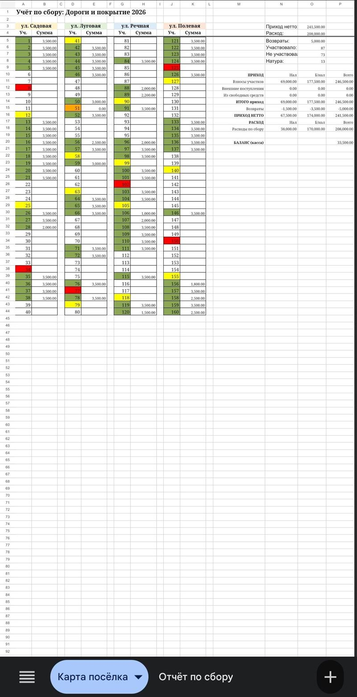
Приход, расход и баланс видно по посёлку целиком и по каждой улице в отдельности. Приложите карту — и картина полная: какие улицы заплатили, а какие в долгах.
Сводки и Excel-отчёты приходят в Telegram — скачивай и проверяй хоть каждый день. Никаких «зайдите к казначею с тетрадкой».
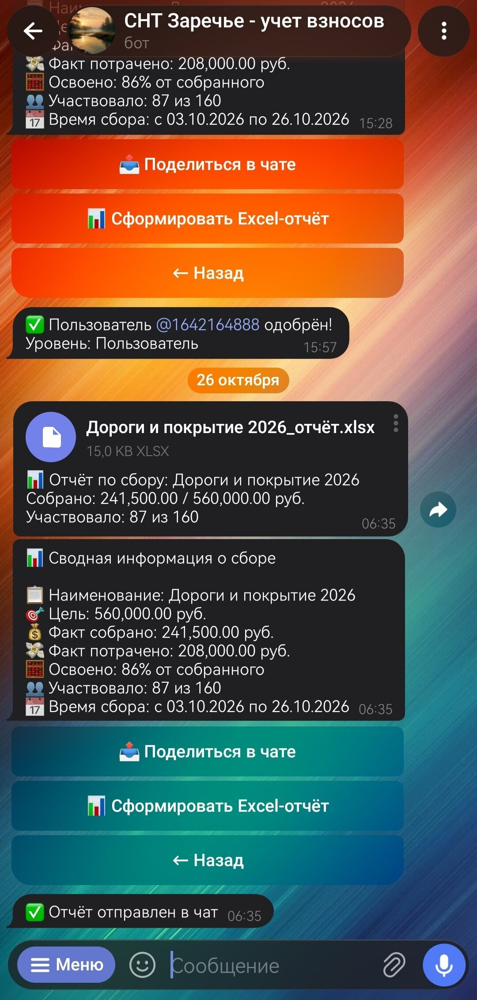
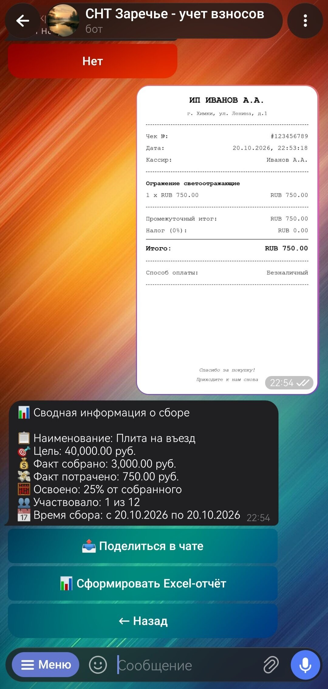
Плиты, песок, услуги трактора: расход появляется в казне вместе с документом. Соседи видят не только «собрали», но и «освоили» — с подтверждением на каждую покупку.
Каждый отчёт подписывается хэш-подписью. Если файл после выгрузки правили вручную — бот это увидит и скажет прямо: «файл менялся вручную!». Историю учёта невозможно тихо переписать задним числом.
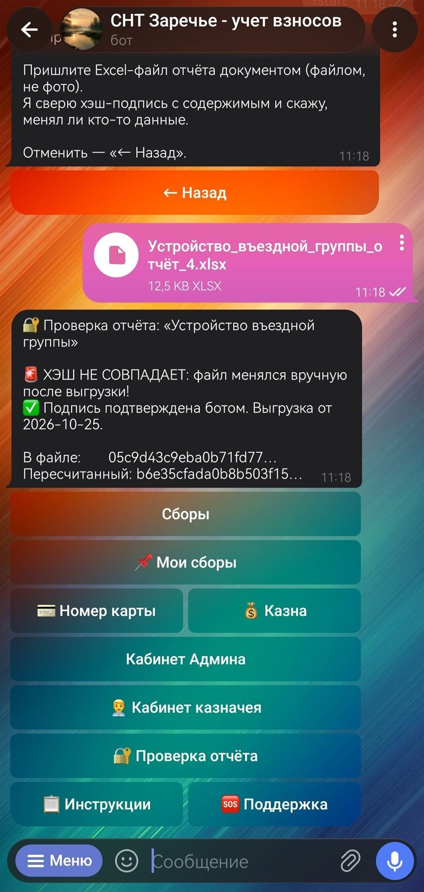
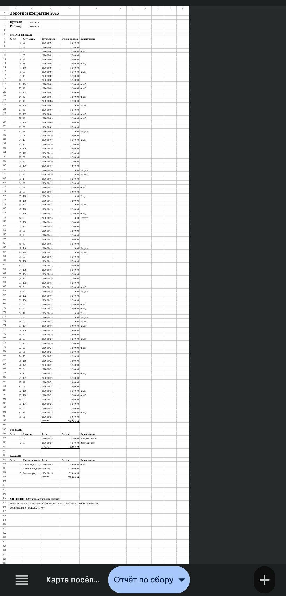
«КазнаБот» и «СчетоводБот» — это наши рабочие демо-имена. У вас бот будет называться так, как решит ваш посёлок: по названию СНТ, по имени председателя или просто «Казна». Мы делаем отдельную копию бота под ваш посёлок, с вашими улицами, участками и сборами — вы создаёте бота в BotFather с любым именем и аватаром, а вся начинка — наша.
Данные принадлежат вашему посёлку, а не нам.
Политика обработки данных — прямо в боте, человеческим языком, без двадцати страниц юридического мелкого шрифта.
Мы — зарегистрированный оператор персональных данных: реестр Роскомнадзора № 77-26-580272, запись публична — можно открыть pd.rkn.gov.ru и проверить.
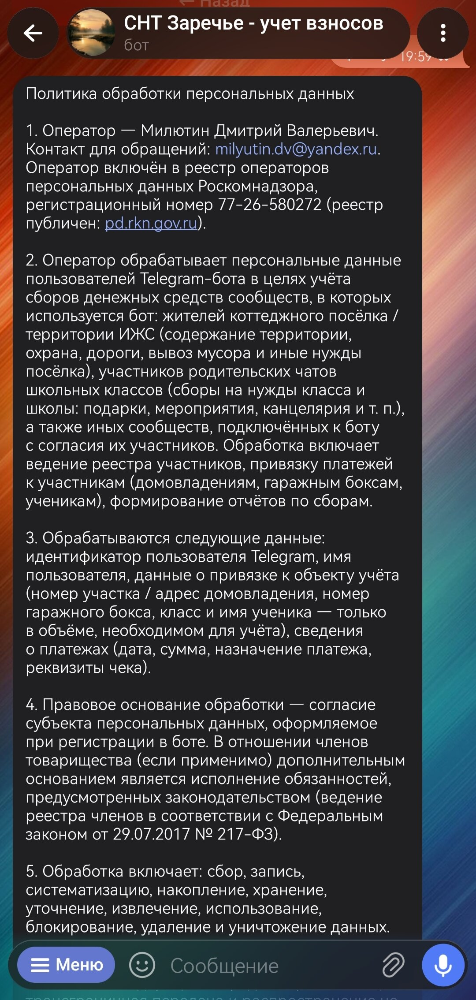
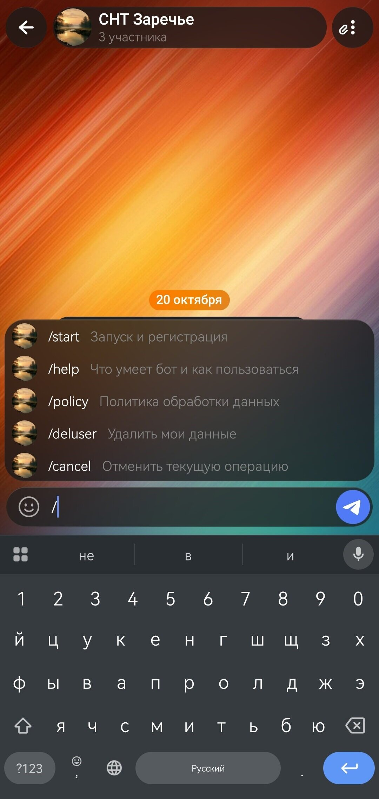
Захотели уйти — команда /deluser удаляет ваши данные из рабочей базы сразу, никаких «оставьте заявку на удаление». Из резервных копий данные исключаются в срок не позднее 30 дней — это написано прямо в политике, без сюрпризов.
Три шага — и бот живёт в вашем посёлке.
Договариваемся о месячном пилоте: настраиваем ваш посёлок бесплатно и без обязательств.
Отдельная копия с вашими улицами, участками и сборами. Имя и аватар — ваши.
Понравилось — оплачиваете год и больше не вспоминаете. Не понравилось — расходимся без обязательств.
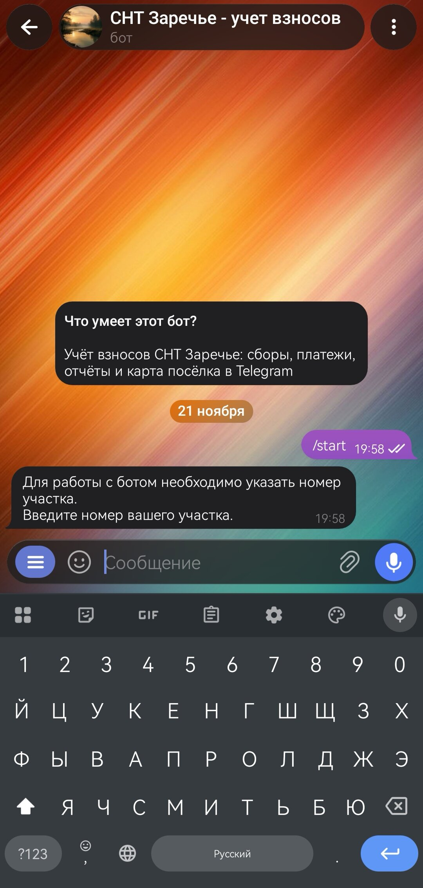
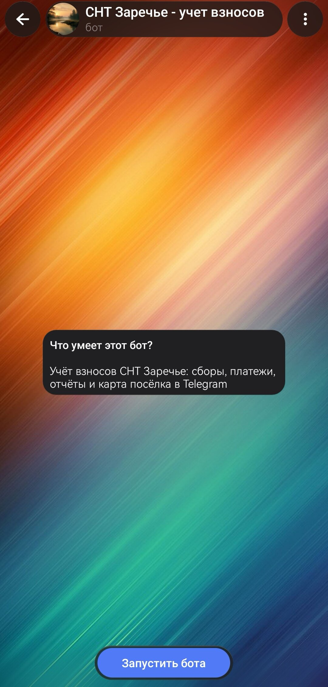
Живой демо-посёлок «СНТ Заречье»: сборы, карта участков, отчёты. Потрогайте, прежде чем звать к себе.
Открыть демо-бота Написать намХотите увидеть, как выглядят уведомления в общем чате посёлка? Загляните в тестовый чат «СНТ Заречье» — там бот работает вживую.